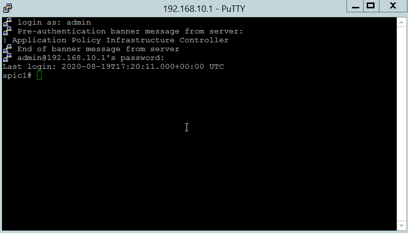
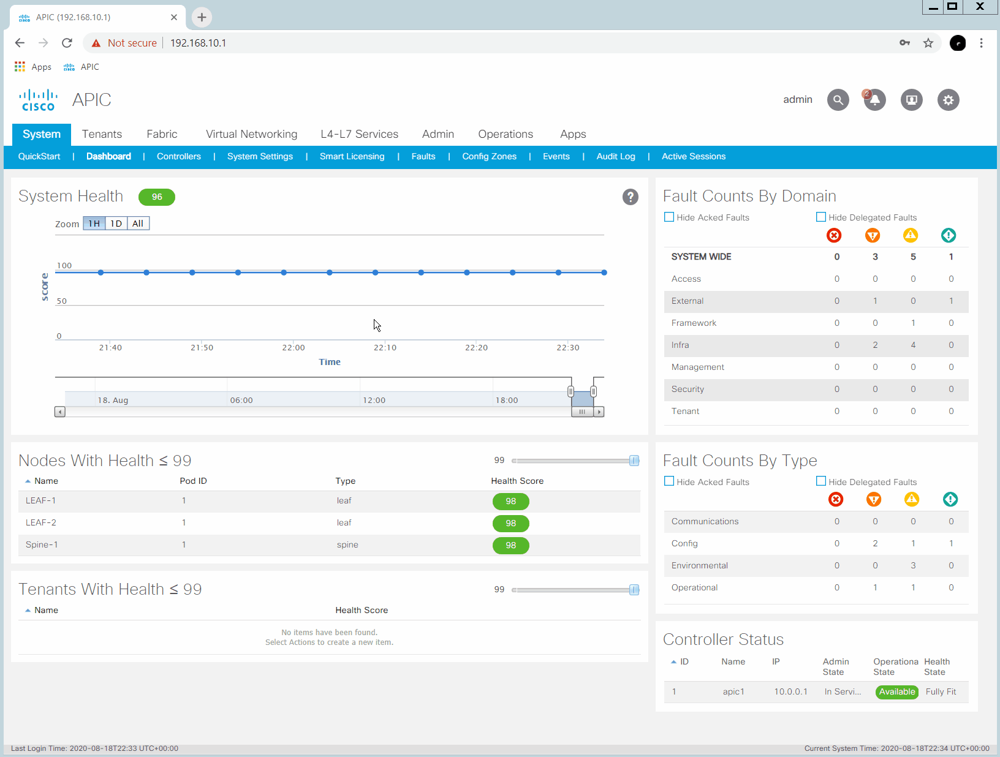
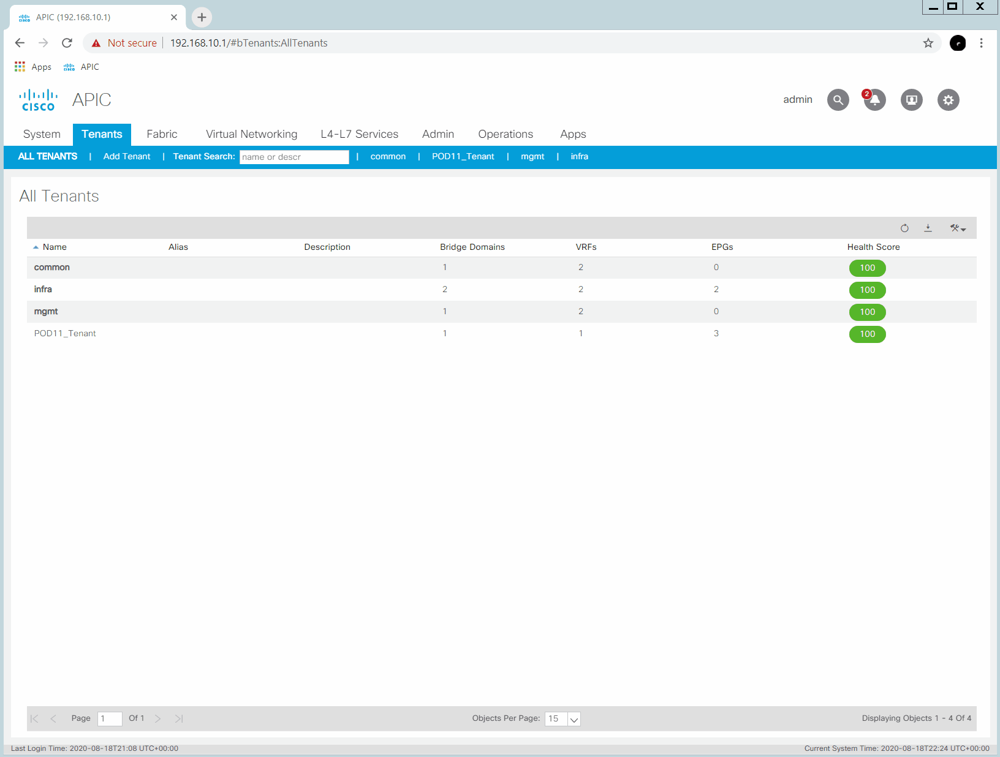

Lab 09 ACI Troubleshooting Tools¶
ACI supports both GUI and CLI based tools.
Its important to note that the CLI tools are essentially an overlay which simulates NX-OS along with commands specific to the ACI environment.
Lab Goal¶
Step 1 - Familiarize yourself with ACI Troubleshooting APIC (GUI) tools
Step 2 - Familiarize yourself with ACI Troubleshooting APIC CLI tools
Step 3 - Explore the ACI Object Store Browser (Visore)
Step 4 - Explore the CLI based ACI Object Store Browser
Step 1 - Familiarize yourself with ACI Troubleshooting APIC (GUI) tools¶
Fabric Inventory
System - Faults
System - Audit Logs
System - Events - Port Events
Operations Tab
Endpoint Tracker
Step 2 - Familiarize yourself with ACI Troubleshooting APIC CLI tools¶
Many of the familiar NX-OS commands are available via the APIC CLI. There are also ACI specific CLI commands with which you should become familiar.
Command Overview
| Command | Description |
|---|---|
| acidiag | ACI Diagnostic information Main command |
| moquery | Managed Object Store Browser CLI command |
| iping | The iping utility provides a version of ping that is "overlay aware" that can be used to test reachability from the fabric. |
| show | ACI specific show commands plus many of the familiar NX-OS show commands are supported. |
| icurl | Unauthenticated CLI command used to interact with a web page |
| mobrowser | CLI/Vim based ASCII "graphical" Managed Object Browser - Deprecated Use Visore or an ACI App |
| attach & fabric | These commands are deprecated and should not be used but since they have such a history with ACI, they warrant a mention. Connect (SSH) to a leaf or spine on the fabric - Deprecated SSH directly or via the APIC or use the fabric command from the APIC |
Step 2.1 Overview of acidiag command¶
acidiag fnvread displays the fabric node vector (fnv) nodes in the fabric. Notice the IP Address information. These are the VTEP IP addresses automatically assigned via DHCP by the APIC from the large block provided during APIC setup. acidiag avread displays the appliance vector (av) (APIC) information. This command is particulary useful when troubleshooting APIC and APIC cluster issues.
Step 2.2 Overview of moquery command¶
This command is discussed in detail further on in the Object Store Browser discussion.
Step 2.3 Overview of iping command¶
The iping utility provides a version of ping that is "overlay aware" that can be used to test reachability from the fabric.
LEAF-1# iping -h
usage: iping [ -d set the SO_DEBUG option]
[ -D enable debug information ]
[ -F enable do not fragment bit in IP header ]
[ -L receive packets on supplied interface ]
[ -n enable printing host IP address than resolved name ]
[ -q quiet output ]
[ -r disable routing of the packets, send only to directly connected hosts ]
[ -v output in verbose format ]
[ -V <vrf-name> name of the VRF through which destination is reachable ]
[ -c <count> no of packets to send ]
[ -i <wait> no of seconds to wait before sending next packet ]
[ -p <pattern> packet payload pattern ]
[ -s <packetsize> size of packets to send ]
[ -t <timeout> wait for seconds to receive reply ]
[ -S <source ip/interface> send packet with given source-ip or IP of given interface and
send packet out of that interface ]
<host> destination host-name or ip address
LEAF-1#
Step 2.4 Overview of notable show commands¶
| Command | Highlights |
|---|---|
| show fabric membership | Show fabric leaf and spine switches with Serial Numbers, Node IDs, Name, Model, Role, IP and state information |
| version | Show APIC controller, leaf and spine switches with Node ID, Name, and Version. |
| show controller | Show controller information. Good command to see controller health, fabric IP, In band and out of band IPs (v4 and v6) |
| show tenant | Listing of all fabric tenants |
Step 2.5 Overview of icurl command¶
The APIC controllers support the icurl command.
This command is used for sending URL requests
Step 2.6 Mention of the mobrowser command (now deprecated)¶
Enter ? for help.
To quit enter :quit (may need to enter twice) to exit the semi-graphical mode and quit the program
apic1# mobrowser
This command is being deprecated on APIC controller, please use NXOS-style equivalent command

Step 2.7 Mention of the attach and fabric commands (now deprecated)¶
The attach command provides a short cut to SSH to a specific fabric Node from within the fabric.
apic1# acidiag fnvread
ID Pod ID Name Serial Number IP Address Role State LastUpdMsgId
--------------------------------------------------------------------------------------------------------------
101 1 Spine-1 SAL1948TWWP 10.0.72.97/32 spine active 0
102 1 LEAF-1 SAL1948U33K 10.0.72.98/32 leaf active 0
103 1 LEAF-2 SAL1948U35D 10.0.72.96/32 leaf active 0
Total 3 nodes
apic1# attach LEAF-1
This command is being deprecated on APIC controller, please use NXOS-style equivalent command
# Executing command: ssh LEAF-1 -b 10.0.0.1
Warning: Permanently added 'leaf-1,10.0.72.98' (RSA) to the list of known hosts.
Password:
Cisco Nexus Operating System (NX-OS) Software
TAC support: http://www.cisco.com/tac
Copyright (c) 2002-2018, Cisco Systems, Inc. All rights reserved.
The copyrights to certain works contained in this software are
owned by other third parties and used and distributed under
license. Certain components of this software are licensed under
the GNU General Public License (GPL) version 2.0 or the GNU
Lesser General Public License (LGPL) Version 2.1. A copy of each
such license is available at
http://www.opensource.org/licenses/gpl-2.0.php and
http://www.opensource.org/licenses/lgpl-2.1.php
LEAF-1# exit
The fabric command provides a way to execute a show command on a node directly from the APIC.
apic1# fabric 102 show endpoint
----------------------------------------------------------------
Node 102 (LEAF-1)
----------------------------------------------------------------
Legend:
s - arp H - vtep V - vpc-attached p - peer-aged
R - peer-attached-rl B - bounce S - static M - span
D - bounce-to-proxy O - peer-attached a - local-aged m - svc-mgr
L - local E - shared-service
+-----------------------------------+---------------+-----------------+---------
-----+-------------+
VLAN/ Encap MAC Address MAC Info
/ Interface
Domain VLAN IP Address IP Info
+-----------------------------------+---------------+-----------------+---------
-----+-------------+
overlay-1 10.0.72.98 L
lo0
overlay-1 10.0.72.67 L
lo1
apic1#
apic1# fabric 102 show version
----------------------------------------------------------------
Node 102 (LEAF-1)
----------------------------------------------------------------
Cisco Nexus Operating System (NX-OS) Software
TAC support: http://www.cisco.com/tac
Documents: http://www.cisco.com/en/US/products/ps9372/tsd_products_support_serie
s_home.html
Copyright (c) 2002-2014, Cisco Systems, Inc. All rights reserved.
The copyrights to certain works contained in this software are
owned by other third parties and used and distributed under
license. Certain components of this software are licensed under
the GNU General Public License (GPL) version 2.0 or the GNU
Lesser General Public License (LGPL) Version 2.1. A copy of each
such license is available at
http://www.opensource.org/licenses/gpl-2.0.php and
http://www.opensource.org/licenses/lgpl-2.1.php
Software
BIOS: version 07.64
kickstart: version 14.0(1h) [build 14.0(1h)]
system: version 14.0(1h) [build 14.0(1h)]
PE: version 4.0(1h)
BIOS compile time: 05/16/2018
kickstart image file is: /bootflash/aci-n9000-dk9.14.0.1h.bin
kickstart compile time: 10/24/2018 03:13:58 [10/24/2018 03:13:58]
system image file is: /bootflash/auto-s
system compile time: 10/24/2018 03:13:58 [10/24/2018 03:13:58]
Hardware
cisco N9K-C9372PX-E ("supervisor")
Intel(R) Core(TM) i3- CPU @ 2.50GHz with 16267264 kB of memory.
Processor Board ID SAL1948U33K
Device name: LEAF-1
bootflash: 62522368 kB
Kernel uptime is 102 day(s), 19 hour(s), 18 minute(s), 32 second(s)
Last reset at 814000 usecs after Fri May 08 23:49:44 2020 UTC
Reason: reset-by-installer
System version: 13.1(1)
Service: Upgrade
plugin
Core Plugin, Ethernet Plugin
apic1#
Step 3 - Explore the ACI Object Store Browser (Visore)¶
We've stressed throughout these labs the important of understanding the Management Information Tree (MIT) and the relationships between objects.
Because this is so important, ACI comes with an HTML based Object Store Browser often referred to as Visore. It is available at https://
Step 3.1 - Log in to Visore , the ACI Object Store Browser¶
The Object Store Browser or Visore can be access in two ways:
- directly via the URL to access the main screen
- from within the GUI by right clicking on an object and selecting Open in Object Store Browser to access that specific object
Direct URL¶
Open a new Tab in your Google Chrome browser and connect to https://apic/visore.html.
Accept any security warnings and log in with the usual APIC credentials.
Examine the information on the opening page, which lists the fabricNode objects in the fabric. (APICs, Leafs, and Spines)

Via GUI¶
In some situations you want to find associations or the DN of a specific object. It is possible to access VISORE directly from the APIC GUI for a specific object.

Step 3.2 - Search for a Class¶
Type the string tenant in the Class or DN: field. In the dynamic drop down list you will see a list of all classes that contain the string tenant. If you can't remember that the object class for a tenant is fvTenant, this is a handy way to find it. Select the fvTenant class and click the Run Query button along with OK when prompted about searching for all instances of the class fvTenant.
Scrolll down to examine the results. You should see the three default (out of the box) tenants (infra, mgmt, and common) and any additional tenants configured on the fabric including your own.
View the attributes or properties that come with an fvTenant Class object. Note that one of the attributes or properties is name.
Step 3.3 - Search Objects by Properties (Attributes)¶
Lets search for objects of Class type fvTenant with the property of name containing the string POD.
Note the different operators (op) you can use.
Step 3.4 - Search for specific objects by Distinguished Name (DN)¶
Take note of the dn of one of the Tenants. It will be something like uni/tn-POD11-Tenant or uni/tn-common. Enter the dn in the Class or DN: field and click the Run Query button. You will find the tenant and its attributes again but this time by querying for it by specific name (DN).
Step 3.5 - Search for specific objects by UID¶
Take note of your tenants uid. Now search for an object of class fvTenant with a property equal to the uid.
Step 3.6 - Drill down the Object Tree¶
From your tenant, note the arrow icons (< >) next to the DN. These allow you drill into children objects and back up to parent objects.
Step 4 - Explore the CLI based ACI Object Store Browser¶
The ACI Object Store Browser has a CLI equivalent via the moquery command.
Step 4.1 - SSH to APIC and explore the moquery command¶
Once you are at the command line of the APIC, first type in moquery with the -h option for "help" on the command.
You can also view the Linux manual or "man" pages.
apic1# moquery -h
usage: Command line cousin to visore [-h] [-i HOST] [-p PORT] [-d DN]
[-c KLASS] [-f FILTER] [-a ATTRS]
[-o OUTPUT] [-u USER]
[-x [OPTIONS [OPTIONS ...]]]
optional arguments:
-h, --help show this help message and exit
-i HOST, --host HOST Hostname or ip of apic
-p PORT, --port PORT REST server port
-d DN, --dn DN dn of the mo
-c KLASS, --klass KLASS
comma seperated class names to query
-f FILTER, --filter FILTER
property filter to accept/reject mos
-a ATTRS, --attrs ATTRS
type of attributes to display (config, all)
-o OUTPUT, --output OUTPUT
Display format (block, table, xml, json)
-u USER, --user USER User name
-x [OPTIONS [OPTIONS ...]], --options [OPTIONS [OPTIONS ...]]
Extra options to the query
apic1#
Tip: Press spacebar to continue the output and the letter q to Quit out of the man (Unix Manual) page.
apic1# man moquery
This command is being deprecated on APIC controller, please use NXOS-style equivalent command
man(8) moquery man(8)
NAME
moquery -- search for MO
SYNOPSIS
moquery --help --host hostname --port portname --dn dn --klass class-
name --filter property --attrs attributes --output output --user user-
name --options options
DESCRIPTION
Searches for managed objects (MOs) within the management information
tree (MIT).
-h, --help
Displays usage information.
-i, --host
Specifies an APIC host.
hostname
The hostname or IP address of an APIC.
-p, --port
Specifies a port for a REST interface.
portname
The REST interface port number.
-d, --dn
Specifies a distinguished name (DN) for a managed object (MO).
dn
The DN of an MO.
-c, --klass
Specifies a class name for the query.
Manual page moquery.man line 1 (press h for help or q to quit)
We wil execute the same searches we ran via the Visore page.
Tip: The CLI can be lengthy so some familiarity with the grep (Global Regular Expression Print) command and its extensions can be useful.
| Command | Description |
|---|---|
| grep | Grep is the most common way to search on a Unikx based system. Without switches, grep only supports basic regular expressions and more advanced searches using meta-characters are not interpreted unless thay are blackslashed. For example if you want to match on one or more whitespace characters in regexp you use \s+ apic1# moquery -c fvTenant | grep 'dn\s\+:' |
| grep -E, --extended-regexp | With the -E switch, you can use extended regular expressions in your search natively (without having to escape characters). Some systems, including the APIC, may recognize egrep which is equivalent to grep -E. apic1# moquery -c fvTenant | grep -E 'dn\s+:' |
| -F, --fixed-strings | With the -F switch, can search for exact (fixed) test very fast |
Remember that Unix/Linux is case sensitive so grep -e and grep -E are not the same!
grep examples
# Notice that we get any attribute that has "name" in in.
apic1# moquery -c fvTenant | grep name
name : common
nameAlias :
name : mgmt
nameAlias :
name : infra
nameAlias :
name : POD11_Tenant
nameAlias :
apic1#
# With the Extended option I can search with a regular expression for lines which
# begin with name, have some spaces, and then a :
apic1# moquery -c fvTenant | grep -E '^name\s+:'
name : common
name : mgmt
name : infra
name : POD11_Tenant
# Same as above but using egrep (grep -E is preferred)
apic1# moquery -c fvTenant | egrep 'name\s+:'
name : common
name : mgmt
name : infra
name : POD11_Tenant
# Similar search with the -F fixed option
apic1# moquery -c fvTenant | grep -F name
name : common
nameAlias :
name : mgmt
nameAlias :
name : infra
nameAlias :
name : POD11_Tenant
nameAlias :
apic1#
# Same as above but using fgrep (grep -F is preferred)
apic1# moquery -c fvTenant | fgrep name
name : common
nameAlias :
name : mgmt
nameAlias :
name : infra
nameAlias :
name : POD11_Tenant
nameAlias :
apic1#
Tip: The moquery command supports a variety of output formats with the -o switch.
| moquery format switch options | Output Description |
|---|---|
| -o table | Displays output or subset of output (when supported) in a table format |
| -o xml | Displays output in XML |
| -o json | Displays output in JSON |
Output Example¶
Tip: Pipe (the | symbol) the output of your moquery command to "more" so you can page through the output (any key advances and the letter q quits)
apic1# moquery -c fvCtx -o json | more
{
"imdata": [
{
"fvCtx": {
"attributes": {
"dn": "uni/tn-common/ctx-copy",
"uid": "0",
"extMngdBy": "",
"pcEnfDir": "ingress",
"seg": "2490368",
"descr": "",
"monPolDn": "uni/tn-common/monepg-default",
"modTs": "2020-05-08T22:59:38.099+00:00",
"scope": "2490368",
"rn": "ctx-copy",
"childAction": "",
"pcEnfPref": "enforced",
"status": "",
"nameAlias": "",
"pcEnfDirUpdated": "yes",
"ipDataPlaneLearning": "enabled",
"ownerTag": "",
"annotation": "",
--More--
Step 3.2 - Search for a Class¶
Lets find all the Tenants configured in the fabric.
apic1# moquery -c fvTenant
\scripts\training\2020\aci4_labguide\docs\images\animations\09_moquery_fvTenant.gif)
Step 3.3 - Search Objects by Properties (Attributes)¶
Lets search for objects of Class type fvTenant with the property of name containing the string POD.
Note: This can be done with grep command as well but in this example we will use the -f filter moquery option.
apic1# moquery -c fvTenant -f 'fv.Tenant.name*"POD"'
Total Objects shown: 1
# fv.Tenant
name : POD11_Tenant
annotation :
childAction :
descr :
dn : uni/tn-POD11_Tenant
extMngdBy :
lcOwn : local
modTs : 2020-07-23T22:58:17.136+00:00
monPolDn : uni/tn-common/monepg-default
nameAlias :
ownerKey :
ownerTag :
rn : tn-POD11_Tenant
status :
uid : 15374
apic1#
apic1# moquery -c fvTenant -f 'fv.Tenant.name=="mgmt"'
Total Objects shown: 1
# fv.Tenant
name : mgmt
annotation :
childAction :
descr :
dn : uni/tn-mgmt
extMngdBy :
lcOwn : local
modTs : 2020-05-08T22:59:36.566+00:00
monPolDn : uni/tn-common/monepg-default
nameAlias :
ownerKey :
ownerTag :
rn : tn-mgmt
status :
uid : 0
apic1#
Step 3.4 - Search for specific objects br Distinguished Name (DN)¶
apic1# moquery -d uni/tn-mgmt
Total Objects shown: 1
# fv.Tenant
name : mgmt
annotation :
childAction :
descr :
dn : uni/tn-mgmt
extMngdBy :
lcOwn : local
modTs : 2020-05-08T22:59:36.566+00:00
monPolDn : uni/tn-common/monepg-default
nameAlias :
ownerKey :
ownerTag :
rn : tn-mgmt
status :
uid : 0
apic1#
Step 3.5 - Search for specific objects by UID¶
Take note of your tenants uid. Now search for an object of class fvTenant with a property equal to the uid.
apic1# moquery -c fvTenant -f 'fv.Tenant.uid=="15374"'
Total Objects shown: 1
# fv.Tenant
name : POD11_Tenant
annotation :
childAction :
descr :
dn : uni/tn-POD11_Tenant
extMngdBy :
lcOwn : local
modTs : 2020-07-23T22:58:17.136+00:00
monPolDn : uni/tn-common/monepg-default
nameAlias :
ownerKey :
ownerTag :
rn : tn-POD11_Tenant
status :
uid : 15374
apic1#